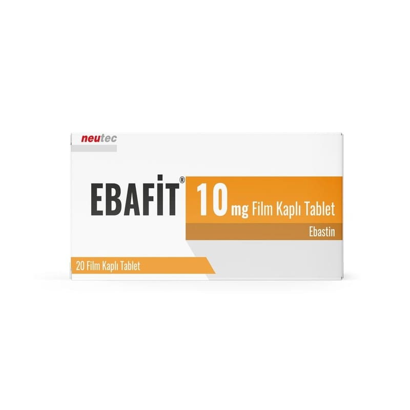

Ebafit 10 mg Film Kaplı Tablet, 30 Adet

Ne için kullanılır
KT · Bölüm 1EBAFİT alerji tedavisinde kullanılan bir antihistaminiktir. Antihistaminik ilaçlar, histaminin etkisini nötralize eder, alerji belirtilerini ortadan kaldırır. EBAFİT, beyaz, dairesel, bikonveks film tabletler şeklinde PVC/PVDC Alüminyum blister içerisinde 10, 20, 30 film tablet olarak ambalajlarda bulunmaktadır. EBAFİT; 12 yaşın üzerindeki hastalarda, - Alerjik konjonktivit (gözlerde kaşıntı ve sulanma), - Kronik alerjik rinit (tüm yıl süren alerjik nezle), - Mevsimlere bağlı alerjik rinit (saman nezlesi), - İdiyopatik kronik ürtiker (nedeni bilinmeyen müzmin kurdeşen; deride şişme, kızarıklık ve kaşıntı) ve - Alerjik dermatitin (alerjik egzema) belirtilerinin tedavisinde kullanılmaktadır.